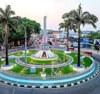
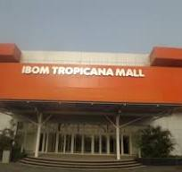
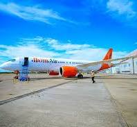
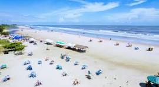
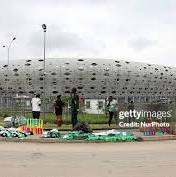
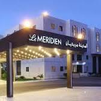
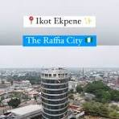

Ibom Plaza
Wellington Bassey Way, UyoThe city's central landmark featuring shopping, restaurants and recreational spaces.

The city's central landmark featuring shopping, restaurants and recreational spaces.

Entertainment complex with cinema, shopping mall and conference facilities.

Akwa Ibom's proudly owned airline connecting major Nigerian cities.

One of West Africa's longest beaches, attracting visitors all year round.

International football stadium hosting sporting and entertainment events.

Luxury accommodation with conference, golf and leisure facilities.

Popularly known as the Raffia City, famous for traditional crafts and trade.
Home to important historical artifacts representing the rich heritage of the region.